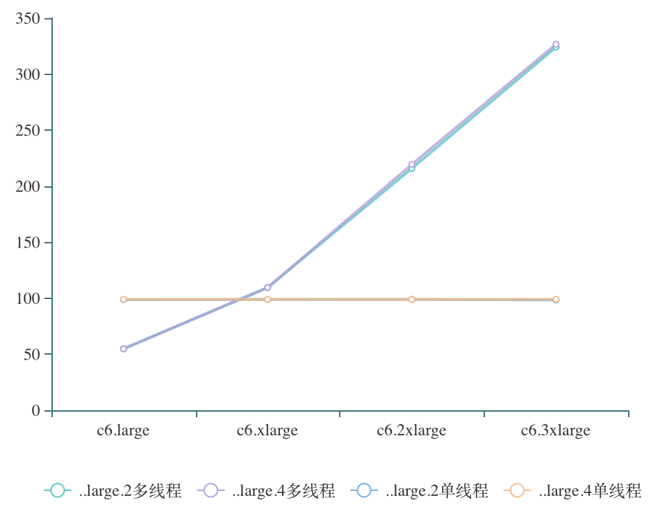
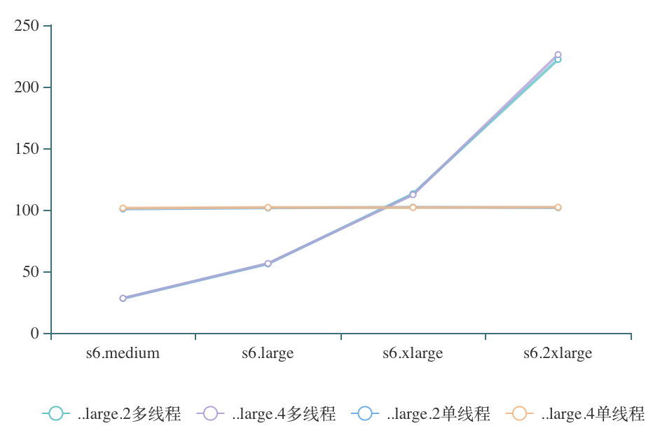
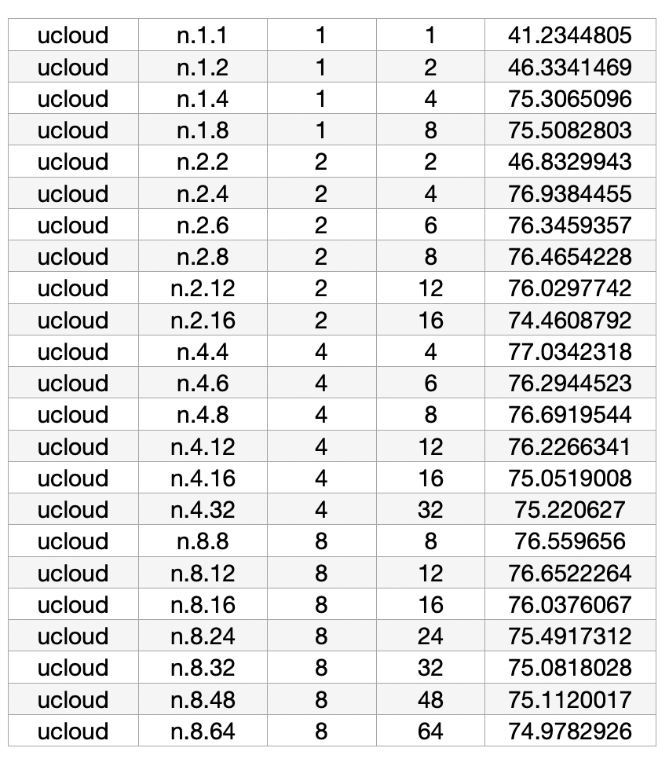
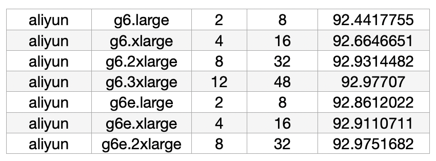
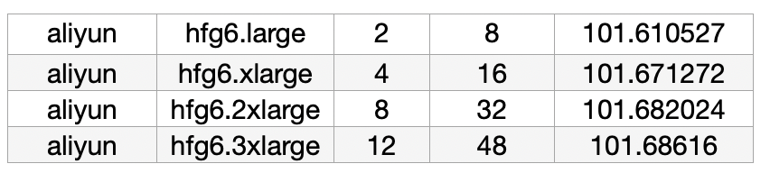

评分预测推广
在日常评测中，我们只评测了各种类的实例中小规格的实例，需要对其他规格的实例性能评测结果进行预测推广。
CPU性能
通过评测，我们发现不同云厂商的云服务器CPU性能符合相同的规律。这里列举了华为云上计算型c6和通用型s6的实例进行展示说明，阿里云、腾讯云、UCloud的结果类似。
 从图中可以看出以下结论：
- 对于本次CPU性能的测试，CPU性能结果与内存大小几乎没有关系。图中的large.2和large.4分别对应着CPU数目与内存大小的比例为1:2和1:4，对应的两条折线几乎重合。
- 对同一种类的实例而言，单个CPU性能是相当的。图中的medium、large、xlarge、2xlarge、3xlarge分别对应着CPU数目为1、2、4、8、12，对于单线程的评测，评测结果在同一种类的实例中是几乎相同的。
- 对同一种类的实例而言，其多线程评测的结果与其CPU数目成比例，是线性关系。注意图中的折线是弯曲的的因为x轴对应的CPU数目并不是等距的，换为散点图如下，可以明显的看出线性关系。
在日常评测中，我们只评测了各种类的实例中小规格的实例。基于以上结论，我们可以在日常的评测中通过小规格实例的评测结果对同种类的其他实例的评测结果进行预测。我们构建了
需要注意的是，在日常评测中CPU评分并不符合线性关系，这是因为同时考虑了单线程和多线程的评测结果，但是在预测是是分开预测的，所以之前构建的模型与CPU的评分并不矛盾。
IO性能
对于总的IO性能，通过评测发现了以下结论：
- 1当内存大小大于等于4GB时：对于阿里云和UCloud两家厂商，总IO性能趋于稳定，如下图UCloud实例IO评测结果所示，可以发现，无论CPU数目和内存大小如何变化，总的IO性能都很稳定的维持在了75分左右。而对于腾讯云和华为云两家厂商，总IO性能并不稳定，存在小幅的波动，同时整体趋势随着CPU数目和内存大小的增加，存在少量的提高，这种提高是很细微的，但并不能忽视。 
- 当内存大小为1GB或2GB的时候，对应的总IO性能相对于第一种情况会明显的下降很多。
在日常评测中，我们评测的小规格的内存大小都是大于等于4GB的。利用第一条结论，对于阿里云和UCloud两家厂商，
内存性能
内存性能的评测同样分为单线程评测和多线程评测，这里以阿里云为例，其他厂商类似。
- 在单线程评测中，可以得出结论：内存性能与CPU数目和内存大小没有明显关系，在同一种类的实例中维持稳定。如下图所示，在g6和g6e两个实例规格族中，性能得分稳定的维持在92分；在hfg6实例规格族中，性能的分稳定的维持在101分。  
- 对于多线程评测，我们发现内存性能即不会维持稳定，也不满足线性关系。可以得出以下两个结论：
- 内存性能虽CPU变化，内存大小对内存性能的影响不大；
- 内存性能虽CPU数目增加而减弱，且CPU数目较小时，内存性能减弱变化较大；CPU数目较大时，内存性能减弱变化较小。这个规律在阿里云的实例中体现的非常明显，从图中呢可以看出，在阿里云中，CPU数目的内存性能的关系近似于二次函数，然而在腾讯云、华为云、UCloud的实例中这一规律体现的并不明显。究其原因，可能是因为只有阿里云在同一类型中的实例是严格遵守同样的CPU内存比，而其他三家厂商比较随意，在同一类型中的实例也有多种CPU内存比。
总的来说，对于单线程评测而言，
网络性能
网络性能虽着配置的增大的确有增强的趋势，但其与CPU数目及内存大小没有明显的关系。影响网络性能的因素有很多其他的方面。所以，我们不对网络性能进行预测。
启动时间
启动时间与规格不存在明显的关系，所以不进行预测。总的来说，在四家厂商中，启动时间整体上由快到慢的顺序为阿里云 < 华为云 < 腾讯云 < UCloud。